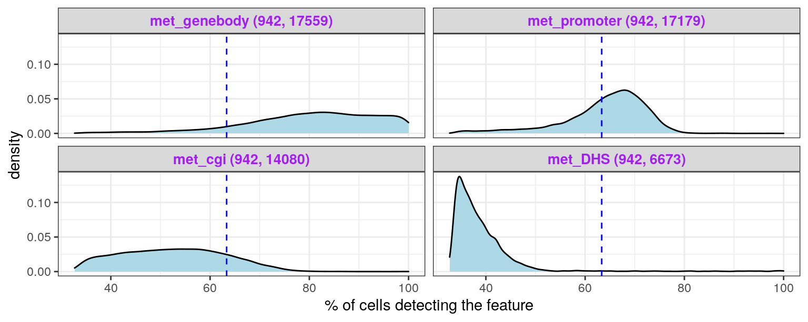
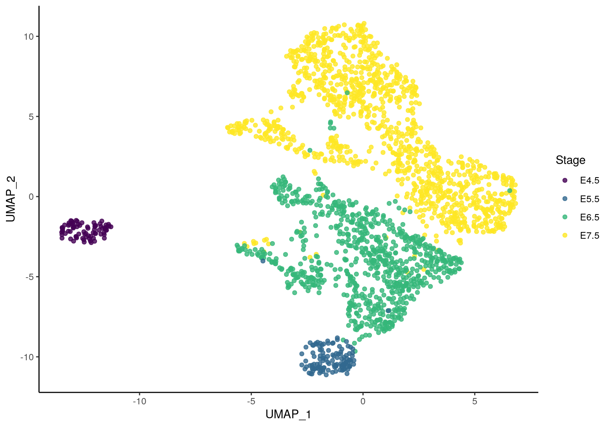
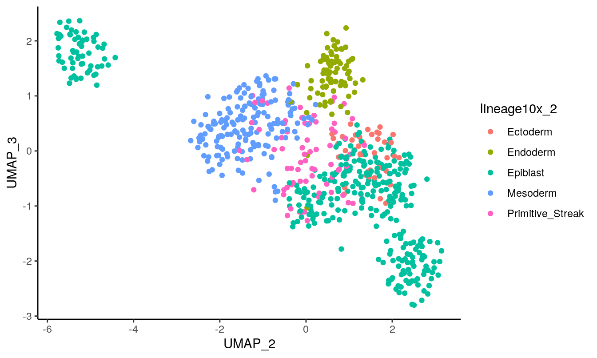
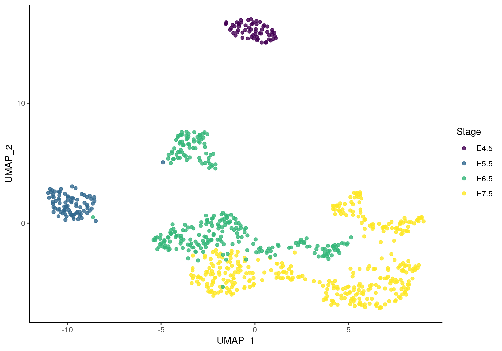
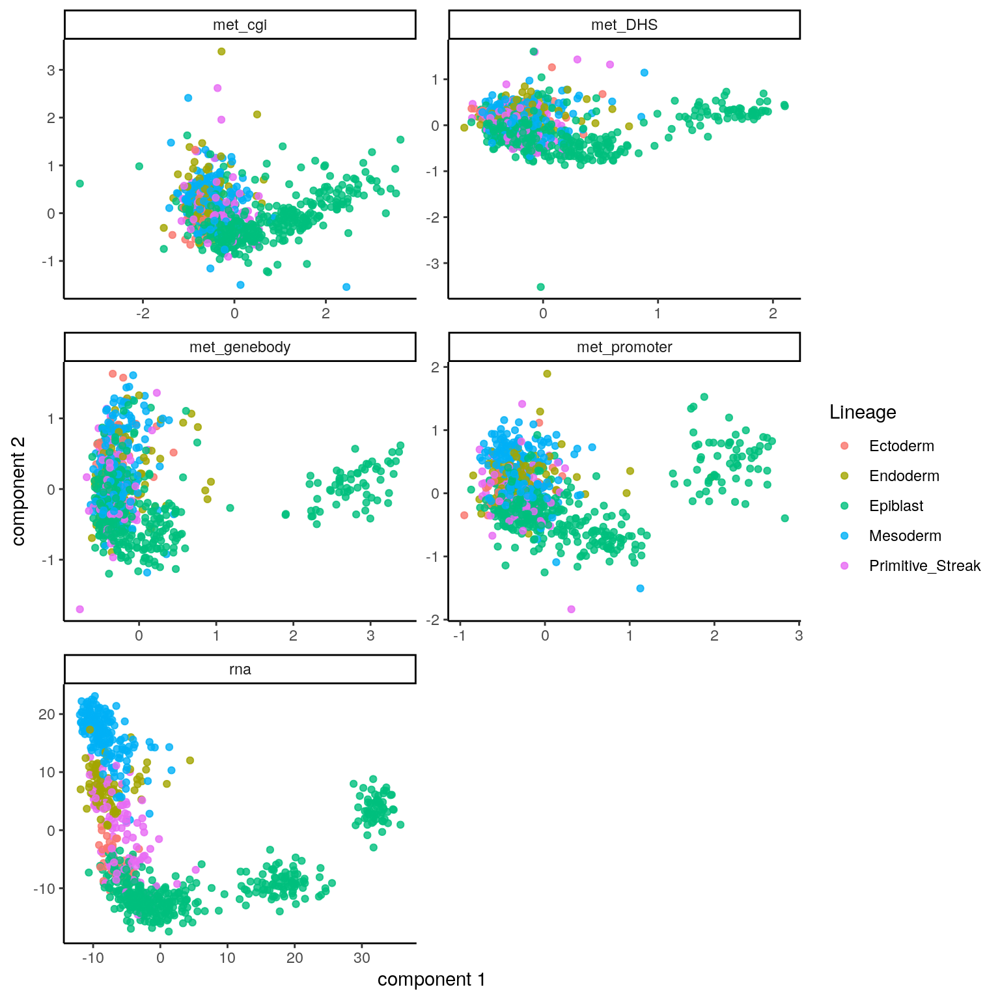
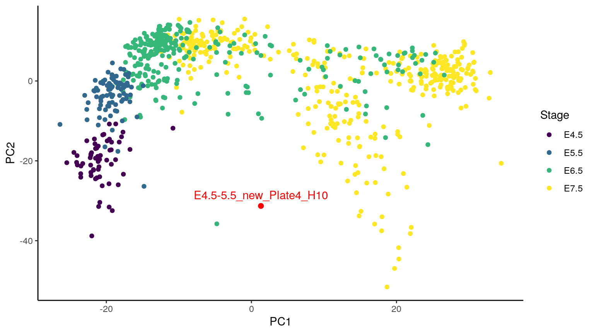

vignettes/index.Rmd
index.RmdNote: These analyses are different from the ones presented in the hackathon due to updated preprocessing if data in order to harmonize the analyses for publication. For original analyses see https://github.com/ajabadi/scNMT_seq_gastrulation.
Load the required packages:
library(BIRSBIO2020.scNMTseq.PLS) library(MultiAssayExperiment) library(scater) library(scran) library(mixOmics) library(ggplot2) library(magrittr) library(reshape2) library(uwot)
Details of the hackathon data and preprocessing steps: https://github.com/BIRSBiointegration/Hackathon/tree/master/scNMT-seq
Load the MultiAssayExperiment object from Cloudstor:
cat('loading data from Cloudstor ...\n') #> loading data from Cloudstor ... gastru.mae_path <- url('https://cloudstor.aarnet.edu.au/plus/s/jsW7nh4YwThw8Q5/download')
gastru.mae <- readRDS(gastru.mae_path)
## subset RNA expression and DNA methylation modalities keep_assays <- grep("rna|met",names(assays(gastru.mae))) gastru.mae <- gastru.mae[,,keep_assays] #> harmonizing input: #> removing 4403 sampleMap rows not in names(experiments) ## remove putative extraembryonic cells cat(sprintf('dropping lineages %s, plus the unassigned lineages.\n', paste(params$drop_lineages, collapse = ', '))) #> dropping lineages Primitive_endoderm, Visceral_endoderm, ExE_ectoderm, plus the unassigned lineages. gastru.mae <- gastru.mae[,!(gastru.mae$lineage %in% params$drop_lineages | is.na(gastru.mae$lineage)),] ## keep cells which pass RNA QC gastru.mae <- gastru.mae[,gastru.mae$pass_rnaQC==TRUE,] ## Keep full rna SCE for UMAP rna.sce <- gastru.mae@ExperimentList$rna ## keep cells that also pass QC for DNA methylation gastru.mae <- gastru.mae[,gastru.mae$pass_metQC==TRUE,] ## rna SCE for cells passing met and rna QC rna.sce.matching <- gastru.mae@ExperimentList$rna
Replace the rna SCE with logcounts in MAE object as the integration wrapper requires matrices in assays:
## rna is an SCE object gastru.mae@ExperimentList #> ExperimentList class object of length 5: #> [1] rna: SingleCellExperiment with 18345 rows and 796 columns #> [2] met_genebody: matrix with 17559 rows and 796 columns #> [3] met_promoter: matrix with 17179 rows and 796 columns #> [4] met_cgi: matrix with 14080 rows and 796 columns #> [5] met_DHS: matrix with 6673 rows and 796 columns ## replace SCE with logcounts gastru.mae@ExperimentList$rna <- logcounts(gastru.mae@ExperimentList$rna) ## rna updated to matrix of logcounts gastru.mae@ExperimentList #> ExperimentList class object of length 5: #> [1] rna: matrix with 18345 rows and 796 columns #> [2] met_genebody: matrix with 17559 rows and 796 columns #> [3] met_promoter: matrix with 17179 rows and 796 columns #> [4] met_cgi: matrix with 14080 rows and 796 columns #> [5] met_DHS: matrix with 6673 rows and 796 columns
Overview of assays:
## helper to get % of missing values in an array get_pct_missing <- function(arr) { round(100*sum(is.na(arr))/prod(dim(arr))) } ## get dimensions and % of missing values for all assays df <- lapply(experiments(gastru.mae), function(w) { c( 'N (# cells)' = dim(w)[2], 'P (# features)' = dim(w)[1], '% data missing' = get_pct_missing(w) ) }) df <- data.frame(df) kable(t(df), align = 'l')
| N (# cells) | P (# features) | % data missing | |
|---|---|---|---|
| rna | 796 | 18345 | 0 |
| met_genebody | 796 | 17559 | 18 |
| met_promoter | 796 | 17179 | 34 |
| met_cgi | 796 | 14080 | 45 |
| met_DHS | 796 | 6673 | 59 |
Breakdown of the number of cells in each stage:
table(gastru.mae$stage) %>% as.data.frame() %>% t() %>% set_rownames(c('stage', '# of cells')) %>% kable()
| stage | E4.5 | E5.5 | E6.5 | E7.5 |
| # of cells | 62 | 86 | 275 | 373 |
Create density plots of the feature detection rate across all cells for all modalities:
# get the methylation assays met_assays <- grep(names(gastru.mae), pattern = '^met', value = TRUE) # add dimensions to labels for ggplot dims <- lapply(experiments(gastru.mae[,,met_assays]), dim) dims <- sapply(dims, function(x) sprintf(' (%s, %s)', x[2], x[1])) names(met_assays) <- paste0(met_assays, dims) %>% as.list() # calculate the feature detection in a data.frame for methylation assays coverages <- lapply(met_assays, function(assay_name) { mat <- assay(gastru.mae, assay_name) NAs <- rowSums(!is.na(mat))/dim(mat)[2]*100 data.frame(pct_NAs=NAs) }) # create a long data.frame containing the assay name for plot coverages <- rbindListWithNames(coverages) coverages$dataset <- factor(coverages$dataset, levels = unique(coverages$dataset), ordered = TRUE)
Genomic contexts vary in level of feature detection rates:
cov_plot <- ggplot(coverages, aes(x = pct_NAs)) + geom_density(fill = 'lightblue', show.legend = FALSE) + geom_vline(aes(xintercept=mean(pct_NAs)), color="blue", linetype="dashed", size=0.5) + labs(x = '% of cells detecting the feature') + facet_wrap(.~dataset, nrow = 2) + theme_bw() + theme(strip.text.x = element_text(size = 10, face = 'bold', color = 'purple')) cov_plot
 Density plots for methylation data show that shorter genomic regions tend to have less feature coverage. Dashed blue line indicates the average across all modalities.
# Create colour palettes for stages: stages <- c("E4.5", "E5.5", "E6.5", "E7.5") # col_palette <- dput(viridisLite::viridis(n = length(stages))) col_palette <- c("#440154FF", "#31688EFF", "#35B779FF", "#FDE725FF") names(col_palette) <- stages
## helper function to create UMAP plots coloured by stage plot_reducedDims <- function(sce, reducedDim = 'UMAP', dims = c(1,2), col_palette) { comps.prefix <- ifelse(reducedDim == 'UMAP', 'UMAP_', 'PC_') df <- data.frame(reducedDim(sce, reducedDim))[,dims] axes <- colnames(df) <- paste0(comps.prefix, dims) df$stage <- sce$stage ggplot(df, aes_string(axes[1], axes[2])) + geom_point(aes(col=stage), alpha = params$ggplot_alpha) + theme_classic()+ scale_color_manual(values = col_palette) + labs(col = 'Stage') }
Select highly variable genes after accounting for technical variation:
decomp <- modelGeneVar(rna.sce) ## filter by mean expression and significance of biological variation signal hvgs <- rownames(decomp)[decomp$p.value<0.01 & decomp$mean > 0.01] length(hvgs) #> [1] 322
Run PCA and then UMAP using PCs:
npcs <- 15 ## PCA first: retrieve npcs PCs rna.sce <- runPCA(rna.sce, ncomponents = npcs, subset_row=hvgs, name = 'PCA') ## UMAP parameters used: cat(sprintf('Running UMAP with parameters %s\n', paste(names(params$umap_params), ':',params$umap_params, collapse = ', '))) #> Running UMAP with parameters run.seed : 42, n_neighbors : 15, n_components : 2, min_dist : 0.55 ## run UMAP set.seed(params$umap_params['run.seed']) rna.sce <- runUMAP(rna.sce, dimred="PCA", ncomponents = params$umap_params['n_components'], n_neighbors = params$umap_params['n_neighbors'], min_dist = params$umap_params['min_dist'])
Plot the first two UMAP components:
plot_reducedDims(sce = rna.sce, reducedDim = 'UMAP', dims = c(1,2), col_palette = col_palette)

UMAP plot separates the cell populations from early-stage, mid-stage, and late-stage cells and captures the the within-stage variation for early-stage and mid-stage cells.
Select highly variable genes after accounting for technical variation:
decomp <- modelGeneVar(rna.sce.matching) ## filter by mean expression and significance of biological variation signal hvgs <- rownames(decomp)[decomp$p.value<0.01 & decomp$mean > 0.01] length(hvgs) #> [1] 347
Run PCA and then UMAP using PCs:
npcs <- 15 ## PCA first: retrieve npcs PCs rna.sce.matching <- runPCA(rna.sce.matching, ncomponents = npcs, subset_row=hvgs, name = 'PCA') ## UMAP parameters used: cat(sprintf('Running UMAP with parameters %s\n', paste(names(params$umap_params), ':',params$umap_params, collapse = ', '))) #> Running UMAP with parameters run.seed : 42, n_neighbors : 15, n_components : 2, min_dist : 0.55 ## run UMAP set.seed(params$umap_params['run.seed']) rna.sce.matching <- runUMAP(rna.sce.matching, dimred="PCA", ncomponents = params$umap_params['n_components'], n_neighbors = params$umap_params['n_neighbors'], min_dist = params$umap_params['min_dist'])
Plot the first two UMAP components:
plot_reducedDims(sce = rna.sce.matching, reducedDim = 'PCA', dims = c(1,2), col_palette = col_palette)

Plot the first two UMAP components:
plot_reducedDims(sce = rna.sce.matching, reducedDim = 'UMAP', dims = c(1,2), col_palette = col_palette)

Similar results to the analysis with all cells.
data dimensions overview:
# data dimensions lapply(experiments(gastru.mae), dim) #> $rna #> [1] 18345 796 #> #> $met_genebody #> [1] 17559 796 #> #> $met_promoter #> [1] 17179 796 #> #> $met_cgi #> [1] 14080 796 #> #> $met_DHS #> [1] 6673 796
integration of all modalities with feature selection:
Here we select for 50 features on each component in multimodal_sPLS_wrapper:
## number of components ncomp <- 5 ## feature scaling scale <- TRUE
cat(sprintf('Running PLS with %s components performing variable selection\n', ncomp)) #> Running PLS with 5 components performing variable selection st <- system.time({ mmspls <- multimodal_sPLS_wrapper(mae = gastru.mae, study_assays = NULL, ncomp = ncomp, scale = scale, design = 'null', lineages = NULL, stages = NULL, DA = NULL, keepX = NULL, save = FALSE) })['elapsed'] #> Making unique feature names by adding assay name to feature name for: met_genebody #> Making unique feature names by adding assay name to feature name for: met_promoter cat('\nPLS run finished. Runtime: ', format_runtime(st), '\n') #> #> PLS run finished. Runtime: 00:03:54
plot_pls <- function(pls_obj, stage, legend.title = 'Stage', comp = c(1,2), col_palette) { variates <- lapply(pls_obj$variates, function(arr){ df <- as.data.frame(arr[,comp]) df$stage <- stage df }) variates <- rbindListWithNames(variates, new_col = 'Modality') axes <- colnames(variates)[1:2] ggplot(variates) + theme_classic() + geom_point(aes_string(x = axes[1], y = axes[2], col = 'stage'), alpha = params$ggplot_alph) + facet_wrap(.~Modality, ncol = 2) + scale_color_manual(values = col_palette) }
Colored by stage:
plot_pls(pls_obj = mmspls, stage = gastru.mae$stage, col_palette = col_palette)

The derived latent components which seek to maximise the sum of concordant variation b/w rna and other modalities show phenotypic relevance in terms of the embryonic stages. It indicates coordinated changes across the methylomes associated with the distinct transcriptional states of cells in the regions of study during gastrulation.
Here we calculate the correlations between components from gene expression and different methylome modalities:
## For a pls object which includes pls cell embeddings from a computed latent space ## where covariance with rna is maximal, calculate the correlation b/w rna embeddings ## and those of a given modality's (per component and average) as a measure of concordant variation with rna concordance <- function(pls_obj, comp = 1) { ## correlation of components with RNA components cor_with_y <- sapply(pls_obj$variates[-1], function(x_variates) { y_variates <- pls_obj$variates[[1]] y_variates <- y_variates[, comp, drop = FALSE] cor <- cor(y_variates, x_variates) cor <- diag(cor) names(cor) <- paste0('Component ', comp) cor['mean'] <- mean(cor) cor <- round(cor, 2) cor }) print(kable(cor_with_y)) ## make a long data.frame cor_with_y <- cor_with_y %>% as.data.frame() %>% t() %>% reshape2::melt(id.vars = 1:3) %>% set_colnames(c('Modality', 'Component', 'Concordance')) ## print concordance measures for each componet and the average: # sapply(unique(as.character(cor_with_y$Component)), function(z){ # cat('#> Component:', z ) # dplyr::filter(cor_with_y, Component == z)[,c('Modality', 'Concordance')] %>% # kable() # }) ggplot(cor_with_y, aes(x = Modality, y = Concordance)) + geom_col(aes(fill = Component), position = 'dodge2') + theme_classic() + labs(y = sprintf('Correlation with RNA (comp %s) ', paste(comp, collapse = ', ')), x = '', fill = '') + ylim(c(0, 1)) + theme(axis.text.x = element_text(angle = 45, vjust = 0.8, hjust=1)) }
concordance(pls_obj = mmspls, comp = c(1, 2)) #> #> #> | | met_genebody| met_promoter| met_cgi| met_DHS| #> |:-----------|------------:|------------:|-------:|-------:| #> |Component 1 | 0.95| 0.92| 0.91| 0.92| #> |Component 2 | 0.46| 0.59| 0.49| 0.39| #> |mean | 0.71| 0.75| 0.70| 0.66|

Melbourne Integrative Genomics, The University of Melbourne (al.jal.abadi@gmail.com)↩︎